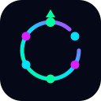
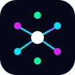
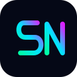

A. Signal Loop
Research から Improve へ戻り、また Research に戻る運用の循環を、一つの輪にしています。思想との一致がいちばん高い案です。

SIGNAL NEXUS
Signal Nexus のロゴ方向性を比べるページです。最終案ではありません。いまのヒーローには使っていません。
背景 #050816。アクセント #00FFA3 / #03E1FF / #DC1FFF。
Research から Improve へ戻り、また Research に戻る運用の循環を、一つの輪にしています。思想との一致がいちばん高い案です。

複数の会場や機能が、中央の一つの点へつながる形です。いまのロゴに近く、Web3 とインフラの印象が強い案です。

S と N を、細い記号ではなく太い一筆のマークにしています。小さいサイズでも名前の頭文字として覚えやすい案です。
